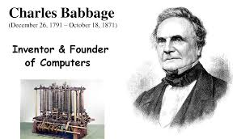

|

|
Charles Babbage KH FRS ( 26 December 1791 18 October 1871) was an English polymath. A mathematician, philosopher, inventor and mechanical engineer, Babbage originated the concept of a digital programmable computer.Babbage is considered by some to be "father of the computer". Babbage is credited with inventing the first mechanical computer, the Difference Engine, that eventually led to more complex electronic designs, though all the essential ideas of modern computers are to be found in Babbage's Analytical Engine, programmed using a principle openly borrowed from the Jacquard loom. Babbage had a broad range of interests in addition to his work on computers covered in his book Economy of Manufactures and Machinery. His varied work in other fields has led him to be described as "pre-eminent" among the many polymaths of his century. |
| HTML | CSS | JS |
|---|---|---|
| *** | ** | * |